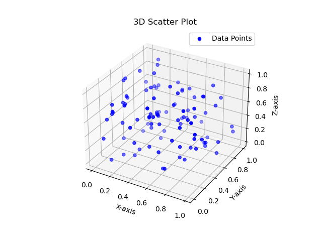

3D visualization
3D data visualization is a powerful technique used to represent data in three-dimensional space, providing a more immersive and intuitive experience for data exploration and analysis. Unlike traditional 2D visualizations, which are limited to a flat plane, 3D data visualization allows for the representation of complex data sets with additional depth and perspective, making it easier to identify patterns, trends, and relationships within the data.
Here are some key points and benefits of 3D data visualization:
1. Enhanced understanding: By adding the third dimension, 3D visualizations can provide a better understanding of the data, especially when dealing with multidimensional data sets. It allows users to perceive data from various angles and perspectives, leading to deeper insights.
2. Improved spatial perception: 3D visualizations are particularly useful when working with spatial data, such as geographical data, molecular structures, architectural designs, or simulations. The depth provided by the third dimension helps users grasp the spatial relationships more accurately.
3. Interactivity and exploration: 3D visualizations often come with interactive features, enabling users to manipulate the visualization, zoom, rotate, and pan to explore the data from different viewpoints. This interactivity enhances the user experience and facilitates better data analysis.
4. Communication and presentation: 3D data visualizations can be visually engaging and captivating, making them valuable tools for presenting complex information to non-technical audiences. They can effectively communicate insights, trends, and findings in a more compelling manner.
5. Identification of outliers and anomalies: The additional dimension in 3D visualization can make it easier to identify outliers or anomalies that might not be apparent in 2D representations. This can be particularly useful in fields like finance, engineering, and medical research.
6. Integration with Virtual Reality (VR) and Augmented Reality (AR): As VR and AR technologies continue to advance, 3D data visualization can be seamlessly integrated into these platforms, providing even more immersive and interactive data exploration experiences.
However, it's essential to be cautious with the use of 3D data visualization. While it offers benefits in certain contexts, not all data sets are suitable for 3D representation. In some cases, a 2D visualization might be more effective and less prone to distortions or misinterpretations.
Overall, 3D data visualization is a valuable tool for understanding complex data sets, improving data exploration, and presenting information in a more engaging manner. Its potential continues to grow as technology advances and more sophisticated techniques for interactive 3D visualization are developed.
import numpy as np
import matplotlib.pyplot as plt
from mpl_toolkits.mplot3d import Axes3D
# Generate random 3D data points
np.random.seed(42)
num_points = 100
x = np.random.rand(num_points)
y = np.random.rand(num_points)
z = np.random.rand(num_points)
# Create a 3D scatter plot
fig = plt.figure()
ax = fig.add_subplot(111, projection='3d')
ax.scatter(x, y, z, c='b', marker='o', label='Data Points')
ax.set_xlabel('X-axis')
ax.set_ylabel('Y-axis')
ax.set_zlabel('Z-axis')
ax.set_title('3D Scatter Plot')
plt.legend()
plt.show()Results:
In this example, we use NumPy to generate random data points for the x, y, and z coordinates. The scatter() function from Matplotlib's 3D plotting toolkit (mpl_toolkits.mplot3d) is used to create the 3D scatter plot. The data points are represented by blue spheres ('o' marker), and the labels for the axes and title are added to enhance the visualization.
When you run the code, a 3D scatter plot window will pop up, showing the random data points in 3D space. You can interact with the plot, rotate it, zoom in/out, and explore the data from different angles using the mouse.
Keep in mind that this is a simple example, and you can customize the plot further by adjusting colors, markers, sizes, or adding additional features based on your specific data and requirements.